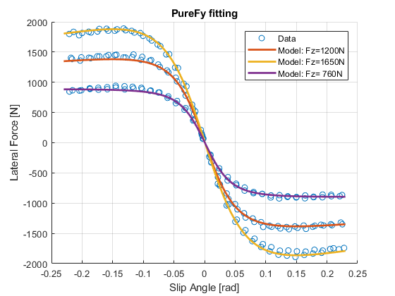

How to fit a model with MFeval
Contents
Load the data
First load the data into the workspace For this example, the data is stored as a Table and has been already filtered, cropped and pre-processed. The data in this example is already in ISO-W and all channels in SI units (N, Nm, m, s, rad, Pa)
load('TyreData.mat')
Fitting process
% Load a TIR file as a starting point for the fitting InitalParameterSet = mfeval.readTIR('PacejkaBook_Defaults.tir'); % Set nominal parameters of the model (DO NOT CHANGE AFTER) InitalParameterSet.UNLOADED_RADIUS = 0.26; % Unloaded tire radius InitalParameterSet.FNOMIN = 1200; % Nominal load InitalParameterSet.LONGVL = 16.7; % Nominal reference speed InitalParameterSet.NOMPRES = 85000; % Nominal inflation pressure % Create the initial parameters for the fitting (seeds) x0(1) = InitalParameterSet.PCY1; %Shape factor Cfy for lateral forces x0(2) = InitalParameterSet.PDY1; %Lateral friction Muy x0(3) = InitalParameterSet.PDY2; %Variation of friction Muy with load x0(4) = InitalParameterSet.PDY3; %Variation of friction Muy with squared camber x0(5) = InitalParameterSet.PEY1; %Lateral curvature Efy at Fznom x0(6) = InitalParameterSet.PEY2; %Variation of curvature Efy with load x0(7) = InitalParameterSet.PEY3; %Zero order camber dependency of curvature Efy x0(8) = InitalParameterSet.PEY4; %Variation of curvature Efy with camber x0(9) = InitalParameterSet.PEY5; %Variation of curvature Efy with camber squared x0(10) = InitalParameterSet.PKY1; %Maximum value of stiffness Kfy/Fznom x0(11) = InitalParameterSet.PKY2; %Load at which Kfy reaches maximum value x0(12) = InitalParameterSet.PKY3; %Variation of Kfy/Fznom with camber x0(13) = InitalParameterSet.PKY4; %Curvature of stiffness Kfy x0(14) = InitalParameterSet.PKY5; %Peak stiffness variation with camber squared x0(15) = InitalParameterSet.PKY6; %Fy camber stiffness factor x0(16) = InitalParameterSet.PKY7; %Vertical load dependency of camber stiffness x0(17) = InitalParameterSet.PHY1; %Horizontal shift Shy at Fznom x0(18) = InitalParameterSet.PHY2; %Variation of shift Shy with load x0(19) = InitalParameterSet.PVY1; %Vertical shift in Svy/Fz at Fznom x0(20) = InitalParameterSet.PVY2; %Variation of shift Svy/Fz with load x0(21) = InitalParameterSet.PVY3; %Variation of shift Svy/Fz with camber x0(22) = InitalParameterSet.PVY4; %Variation of shift Svy/Fz with camber and load x0(23) = InitalParameterSet.PPY1; %influence of inflation pressure on cornering stiffness x0(24) = InitalParameterSet.PPY2; %influence of inflation pressure on dependency of nominal tyre load on cornering stiffness x0(25) = InitalParameterSet.PPY3; %linear influence of inflation pressure on lateral peak friction x0(26) = InitalParameterSet.PPY4; %quadratic influence of inflation pressure on lateral peak friction x0(27) = InitalParameterSet.PPY5; %Influence of inflation pressure on camber stiffness % Declare the anonymous function (Cost function) for the fitting % The @ operator creates the handle, and the parentheses () immediately % after the @ operator include the function input arguments fun = @(X) costFyPure(X, TyreData, InitalParameterSet); % Options for the fitting function lsqnonlin options.TolFun = 1e-08; % Low tolerance to ensure good fitting options.MaxFunEvals = 9999; % Very high to avoid this stop criteria % Non-linear least squares fitting formula % lsqnonlin will try to minimize the output of the cost function (error). % Go to the cost function "costFyPure" to check how this is performed X_OPTIM = lsqnonlin(fun,x0,[],[],options); % Create a copy of the initial parameters and replace the fitted parameters OptimParameterSet = InitalParameterSet; OptimParameterSet.PCY1 = X_OPTIM(1); OptimParameterSet.PDY1 = X_OPTIM(2); OptimParameterSet.PDY2 = X_OPTIM(3); OptimParameterSet.PDY3 = X_OPTIM(4); OptimParameterSet.PEY1 = X_OPTIM(5); OptimParameterSet.PEY2 = X_OPTIM(6); OptimParameterSet.PEY3 = X_OPTIM(7); OptimParameterSet.PEY4 = X_OPTIM(8); OptimParameterSet.PEY5 = X_OPTIM(9); OptimParameterSet.PKY1 = X_OPTIM(10); OptimParameterSet.PKY2 = X_OPTIM(11); OptimParameterSet.PKY3 = X_OPTIM(12); OptimParameterSet.PKY4 = X_OPTIM(13); OptimParameterSet.PKY5 = X_OPTIM(14); OptimParameterSet.PKY6 = X_OPTIM(15); OptimParameterSet.PKY7 = X_OPTIM(16); OptimParameterSet.PHY1 = X_OPTIM(17); OptimParameterSet.PHY2 = X_OPTIM(18); OptimParameterSet.PVY1 = X_OPTIM(19); OptimParameterSet.PVY2 = X_OPTIM(20); OptimParameterSet.PVY3 = X_OPTIM(21); OptimParameterSet.PVY4 = X_OPTIM(22); OptimParameterSet.PPY1 = X_OPTIM(23); OptimParameterSet.PPY2 = X_OPTIM(24); OptimParameterSet.PPY3 = X_OPTIM(25); OptimParameterSet.PPY4 = X_OPTIM(26); OptimParameterSet.PPY5 = X_OPTIM(27);
Plot results
% Filter data to plot specific conditions: indFz1 = TyreData.Fz > 1000 & TyreData.Fz < 1400; % 1200 N indFz2 = TyreData.Fz > 1500 & TyreData.Fz < 1800; % 1650 N indFz3 = TyreData.Fz > 650 & TyreData.Fz < 1000; % 760 N indIA = TyreData.IA > -0.01 & TyreData.IA < 0.01; % 0 rad indP = TyreData.P > 8e4 & TyreData.P < 9e4; % 83160 Pa indFz = indFz1 | indFz2 | indFz3; filt = indFz & indIA & indP; % Create data inputs to do a data replay with MFeval and check the fitting % quality evalFz1 = ones(100,1)*1200; evalFz2 = ones(100,1)*1650; evalFz3 = ones(100,1)*760; evalNull = zeros(100, 1); evalSA = linspace(-0.23,0.23)'; evalVx = ones(100, 1)*16; evalP = ones(100,1)*83160; MFinput1 = [evalFz1 evalNull evalSA evalNull evalNull evalVx evalP]; MFinput2 = [evalFz2 evalNull evalSA evalNull evalNull evalVx evalP]; MFinput3 = [evalFz3 evalNull evalSA evalNull evalNull evalVx evalP]; % Call mfeval with the optimized parameters MFout1 = mfeval(OptimParameterSet,MFinput1,111); MFout2 = mfeval(OptimParameterSet,MFinput2,111); MFout3 = mfeval(OptimParameterSet,MFinput3,111); % Plot data vs Fitted Model figure hold on plot(TyreData.SA(filt), TyreData.Fy(filt),'o') plot(MFout1(:,8), MFout1(:,2),'-', 'linewidth', 2) plot(MFout2(:,8), MFout2(:,2),'-', 'linewidth', 2) plot(MFout3(:,8), MFout3(:,2),'-', 'linewidth', 2) grid on xlabel('Slip Angle [rad]') ylabel('Lateral Force [N]') title('PureFy fitting') legend('Data', 'Model: Fz=1200N', 'Model: Fz=1650N', 'Model: Fz= 760N')
Nested functions
function [ error ] = costFyPure(X, Data, ParameterSet) %COSTFYPURE calls MFeval and calculates the error between the model and the %input data. % % error = costFyPure(X, Data, ParameterSet) % % X: Is a structure that contains the FyPure parameters that are being % fitted. X is changing all the time when lsqnonlin is calling this % function. % Data: Is a Table that contains the Data used to measure the error % of the model that is being fitted. % ParameterSet: Is a structure of MF6.1 parameters. The parameters are used % only to call MFeval without errors. % % Example: % error = costFyPure(Xstructure, TableData, ParameterSet) % Create the Inputs for MFeval INPUTS = [Data.Fz Data.SR Data.SA Data.IA Data.Phit Data.Vx Data.P Data.W]; % Select use mode 211. For more info go to the documentation of MFeval USE_MODE = 211; % Unpack the parameters that are being fitted and replace them into the % ParameterSet. ParameterSet.PCY1 = X(1) ;%Shape factor Cfy for lateral forces ParameterSet.PDY1 = X(2) ;%Lateral friction Muy ParameterSet.PDY2 = X(3) ;%Variation of friction Muy with load ParameterSet.PDY3 = X(4) ;%Variation of friction Muy with squared camber ParameterSet.PEY1 = X(5) ;%Lateral curvature Efy at Fznom ParameterSet.PEY2 = X(6) ;%Variation of curvature Efy with load ParameterSet.PEY3 = X(7) ;%Zero order camber dependency of curvature Efy ParameterSet.PEY4 = X(8) ;%Variation of curvature Efy with camber ParameterSet.PEY5 = X(9) ;%Variation of curvature Efy with camber squared ParameterSet.PKY1 = X(10) ;%Maximum value of stiffness Kfy/Fznom ParameterSet.PKY2 = X(11) ;%Load at which Kfy reaches maximum value ParameterSet.PKY3 = X(12) ;%Variation of Kfy/Fznom with camber ParameterSet.PKY4 = X(13) ;%Curvature of stiffness Kfy ParameterSet.PKY5 = X(14) ;%Peak stiffness variation with camber squared ParameterSet.PKY6 = X(15) ;%Fy camber stiffness factor ParameterSet.PKY7 = X(16) ;%Vertical load dependency of camber stiffness ParameterSet.PHY1 = X(17) ;%Horizontal shift Shy at Fznom ParameterSet.PHY2 = X(18) ;%Variation of shift Shy with load ParameterSet.PVY1 = X(19) ;%Vertical shift in Svy/Fz at Fznom ParameterSet.PVY2 = X(20) ;%Variation of shift Svy/Fz with load ParameterSet.PVY3 = X(21) ;%Variation of shift Svy/Fz with camber ParameterSet.PVY4 = X(22) ;%Variation of shift Svy/Fz with camber and load ParameterSet.PPY1 = X(23) ;%influence of inflation pressure on cornering stiffness ParameterSet.PPY2 = X(24) ;%influence of inflation pressure on dependency of nominal tyre load on cornering stiffness ParameterSet.PPY3 = X(25) ;%linear influence of inflation pressure on lateral peak friction ParameterSet.PPY4 = X(26) ;%quadratic influence of inflation pressure on lateral peak friction ParameterSet.PPY5 = X(27) ;%Influence of inflation pressure on camber stiffness % Call MFeval OUTPUT = mfeval(ParameterSet,INPUTS,USE_MODE); % Get the Fy from the MF6.1 model Fy_MFeval = OUTPUT(:,2); % Calculate error against the data error = (Data.Fy - Fy_MFeval); end
Local minimum possible. lsqnonlin stopped because the final change in the sum of squares relative to its initial value is less than the selected value of the function tolerance.